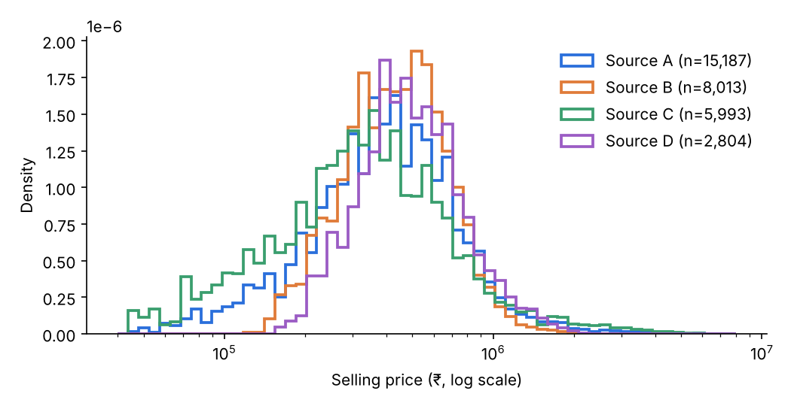
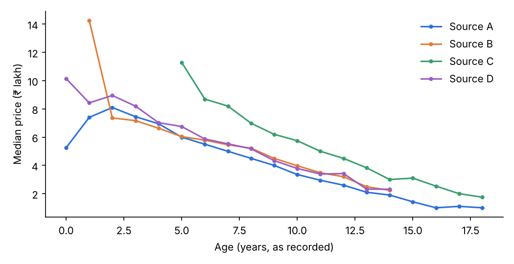
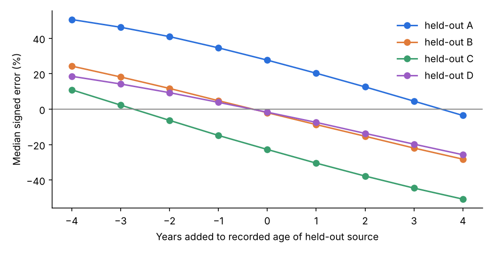

1. Question and scope
How accurately can machine-learning models predict the selling price of a used car in India, and does that accuracy hold when the model is applied to listings from a data source it was not trained on?
One row
One used-car listing: a car offered at a stated price.
Target
Selling price in rupees (₹). We report errors in lakh (1 L = ₹100,000).
Prediction time
When a car is listed. We use only what a seller knows then: brand, model, age, kilometres driven, fuel and transmission.
Why it matters. A pricing model is usually built on one platform's data and then used on new listings, sometimes from another platform, city or year. A random train/test split hides this, because test cars come from the same sources as training cars. We therefore report two numbers for every model: in-distribution accuracy and accuracy on a held-out source.
What we do not claim. The models predict listed prices in these datasets, not a car's true market value. Feature effects are associations; for example, "older cars sell for less" here is not a causal estimate. Results apply to these four Indian sources and the years they cover.
2. Data
Source. Top 4 Used Car Sales Datasets Combined (Kaggle, file output.csv): four public Indian used-car datasets
merged into one file of 32,200 rows and 14 columns (brand, model, transmission, age, fuel, engine, km, owner, price,
location, mileage, power, seats, body type). The data are public and contain no personal information. We
redistribute only derived summaries and a sample of predictions, not the raw file.
Recovering the four sources
The merged file has no column saying which original dataset a row came from, but our evaluation needs that.
Each original dataset recorded a different set of columns, so the pattern of missing columns identifies
the source. Four patterns cover all rows. The rules are in src/prepare.py.
Labels A–D are ours. We did not match them to the original Kaggle dataset names, so we describe each source by what it contains.
The sources differ in ways that matter for prediction


The clearest check holds the car fixed. The table shows the median price (₹ lakh) of the ten most common models for cars aged 5–8 years. Source A is consistently cheapest and C most expensive, so "age" or "price" probably does not mean exactly the same thing in each source. Possible reasons include different collection years, age computed from different reference years, or different platforms (dealer versus private seller). We cannot tell these apart from the data.
Data-quality issues
- Missing columns by design: engine, owner, mileage, power, seats, location and body type are each absent from one or more sources (table above). Only brand, model, age, km, fuel, transmission and price exist everywhere.
- Inconsistent model names across sources (Datsun's redi-GO appears as "redi go", "redigo", "redi-go" and "redi"; "swift dzire" vs "dzire"). We do not merge these by hand, because a pricing tool would meet the same messiness on a new platform.
- Duplicates and impossible values: 185 exact duplicate listings, 17 odometer readings above 500,000 km (max 6.5 million), and 0 used as a missing code for mileage and seats.
- Suspect prices remain, such as a 5-year-old Porsche Cayenne listed at ₹2.0 L. We keep them because we cannot verify them, and we show them in the error analysis.
3. Preprocessing
Fixed row-level rules (before splitting)
These rules use no statistics from the data, so applying them before the split cannot leak test information.
Learned steps (inside the model pipeline, training data only)
- One-hot encoding of brand, brand+model, fuel and transmission. The category list is learned from the training fold; models with fewer than 5 training listings share one "rare" column, and unseen models map to it too.
- Linear model: age, age² and log(1 + km), standardised with training-fold mean and SD.
- Target: log(price). Prices are right-skewed and depreciation is roughly multiplicative, so errors on the log scale are more even across cheap and expensive cars. Predictions are converted back with exp(·).
- Ablation only: median imputation plus missing indicators for engine, power, mileage, seats and owner, fitted on training data.
Feature choice. The main models use only the six features recorded in every source. The extra specs are missing for whole sources (for example, B has no engine column), so a model using them would see an all-missing column on some held-out sources. We test their in-distribution value as a separate ablation.
4. Baselines and methods
Mean baseline
Predicts the average training price for every car. This is the proposal's reference point: any model must beat it to be useful.
Model-median lookup added
Median training price of the same brand+model, falling back to the brand and then the overall median. It ignores age and km. It is what a person would do with a price list, so it is a stronger and more realistic baseline than the mean.
Linear regression (ridge, log price)
Objective: least squares on log price plus an L2 penalty α‖w‖². Assumes each model has a fixed log-price offset and that depreciation is a smooth (quadratic) function of age plus a log-km effect, the same for all models. It is interpretable, and the penalty keeps coefficients for rare models stable.
Random forest (log price)
Averages many regression trees, each grown on a bootstrap sample and split to reduce squared error. It needs no assumed functional form and captures interactions (for example, luxury cars depreciating faster). It cannot extrapolate beyond the training range.
Tuning grids. Ridge α ∈ {0.1, 1, 10}. Forest: 120 trees, min samples per leaf ∈ {2, 5}, fraction of features per split ∈ {0.3, 0.6}. Selection is by mean validation MAE.
5. Evaluation design
Both designs were fixed before any model was compared.
A. Random split (in-distribution)
80/20 split stratified by source (25,597 train / 6,400 test). Hyperparameters are chosen by 5-fold CV on the 80% only. The 20% is scored once.
B. Leave-one-source-out (dataset shift)
For each source: train on the other three and score once on the held-out source. Tuning uses an inner leave-one-source-out CV over the three training sources, so the held-out source is never used for any choice. Tuning on the training sources also favours settings that transfer.
Metrics
- MAE (₹), primary: the typical error in rupees, as planned in the proposal.
- RMSE (₹): weights large misses more heavily. It is dominated by expensive cars.
- Median absolute % error and % within ±20%: comparable across sources with different price levels.
- Median signed % error (bias): shows whether a model systematically over- or under-prices a source. This is the clearest signature of shift.
Uncertainty. 95% intervals come from 1,000 bootstrap resamples of test rows. Model differences are bootstrapped in pairs on the same resampled rows. These intervals reflect sampling of listings within a source. They do not cover the much larger uncertainty about which source comes next: with only four sources, we report each one separately instead of averaging.
6. Results
In-distribution versus held-out source
Outlined bars show the random-split test error for cars from each source. Coloured bars show the error when that source was held out entirely. Choose a metric:
In-distribution, ML clearly helps. On the random split, the forest (MAE ₹1.23 L) and linear model (₹1.28 L) improve on the model-median lookup (₹1.87 L) by about a third, and on the mean baseline (₹3.97 L) by two-thirds. The forest beats the linear model by ₹0.05 L (95% CI 0.01–0.08), which is real but small.
On an unseen source, errors roughly double (forest MAE: A 1.19 → 2.37, B 0.84 → 1.39, C 2.02 → 3.39, D 0.87 → 1.32 lakh). The advantage over the lookup largely disappears: the forest is within ±6% of it on A, B and C, and the paired CI for B includes zero.
The damage is mostly bias, not noise. Held-out A is over-priced by about 24–28% and held-out C under-priced by about 21–23%. B and D show almost no bias. The lookup has little bias because it ignores age (see the age check in Errors).
The more complex model is not the more robust one. Under shift, the linear model beats the forest on C (by ₹0.08 L) and on D (by ₹0.27 L; 95% CI 0.21–0.34). The forest's in-distribution edge does not transfer.
Interactive: inspect the held-out predictions
Each dot is a listing (up to 700 sampled per source; metrics use every row). Points on the diagonal are exact. Points above it are over-priced and points below it under-priced. Hover over a dot for details. Switch to "random split" to see the same cars when their source was available in training.
Do the extra specs help? (ablation)
7. Errors and what explains them
Where the forest goes wrong on held-out sources
Median absolute % error by actual price band (signed bias in brackets). Darker cells mean larger errors.
On every held-out source, the forest over-prices the cheapest cars and under-prices the most expensive ones. This is regression to the middle, made worse on C, the source with the most luxury cars (47% median error above ₹20 L).
Representative large errors
- The "rare model" bucket fails for cheap rare cars. Datsun redi-GO automatics (~₹3 L) are priced at ₹18–22 L by the forest. The model had fewer than 5 training listings, or appeared under a spelling never seen in training, so it was encoded as "rare". When D is held out, the automatics in that rare bucket have a median price of ₹24 L and are mostly Audi, Volvo and Mercedes, so the forest gives a cheap rare automatic a luxury price. The lookup, which uses the actual model median, gets these right. A target or brand-level encoding of rare models would be a sensible fix.
- Inconsistent spelling turns a common car into an "unknown" one. Datsun's redi-GO is "redigo" or "redi-go" in A, "redi go" in B, "redi" or "redi-go" in C and "redi" in D. The models match names as exact text, so when B is held out none of its 75 redi-GO listings are recognised, although the same car appears in every other source. "tata new" in C is the same problem.
- Likely label errors. A ₹2.0 L Porsche Cayenne, a ₹3 L Innova and a ₹44k Nano are probably unit or entry mistakes. All models "fail" on them, and they inflate RMSE more than MAE.
Is the bias an age-definition shift? (diagnostic)

We refitted each held-out model and shifted the held-out source's recorded age. Source A's +28% bias disappears at about +3.5 years and C's −23% at about −3 years. B and D are already near zero. A gap of about 6–7 years between A and C is what you would expect if "age" were measured against different reference years, for example data collected years apart.
This uses test labels, so it is a diagnostic, not a model. It shows the bias is consistent with an age or collection-time shift. It cannot rule out a real price-level difference between platforms, which would look the same.
Interactive: what if we had a few labelled listings from the new source?
A practical remedy for bias is to label k listings from the new source and rescale every prediction by their median actual/predicted ratio. Each point averages 200 random draws of k listings, scored on the rest.
The correction helps only where there is bias. With 25 labels, linear MAE on A falls from ₹2.41 L to ₹1.64 L and on C from ₹3.31 L to ₹2.61 L. On B and D, where bias is near zero, it adds noise and makes things slightly worse when k is small. It does not fix the luxury-car or rare-model errors.
8. Try it: price a car
These models were retrained on all four sources: ridge with the random-split α, and a compact 20-tree forest whose random-split MAE () is close to the full forest's (). The error range shown is the held-out-source median % error, a fairer guide than the random-split figure for listings from a new platform.
Loading models…
The forest's curve is a step function. It can only reproduce price levels seen in training, so it is not guaranteed to fall with age the way the linear model's smooth curve does. The two models can disagree sharply on rare models. That disagreement is a useful warning sign (see the Datsun example in Errors).
9. Limitations
- The sources are reconstructed, not given. The missingness rules are clean (four patterns account for every row), but we could not confirm them against the original files.
- Four sources is a small sample of "shift". Each held-out result is one draw. The bootstrap intervals describe noise within a source, not how a fifth platform would behave.
- Age, price level and platform are confounded. We cannot tell whether the bias comes from age definitions, inflation over time or platform pricing.
- Few features. Variant, condition, city and listing date are missing or inconsistent. The ablation shows the extra specs help in-distribution, but they are not available everywhere.
- Model names are not standardised across sources. We found this by inspecting errors on the held-out sources, so we did not fix it and re-run: that would let the test sources shape the model. A natural next step, tested on fresh data, would be to normalise spellings (for example removing spaces and hyphens) and to group rare models by brand instead of one shared "rare" category.
- Listed prices, not transaction prices, and some labels look wrong.
- The compact website forest differs slightly from the evaluated forest. All reported metrics
come from the full models in
src/evaluate.py.
10. Conclusion
On a random split, both ML models give a large, statistically clear improvement over simple baselines. This is the number usually reported. When the test listings come from a source the model has never seen, errors roughly double and most of the advantage over a model-median lookup disappears. The main cause is systematic bias on two of the four sources (±20–28%), consistent with differences in how age or price level is recorded. The more flexible random forest is no more robust than ridge regression, and is worse on two held-out sources. For a pricing tool to be used on a new platform, a random-split score overstates reliability. A small labelled sample from the new platform is the cheapest way to detect and partly correct the bias.
11. Reproduce
- Download Top 4 Used Car Sales Datasets Combined from Kaggle and save the CSV as
data/raw.csv(32,200 rows). It is not redistributed in the repository. pip install -r requirements.txt(Python 3.10+, scikit-learn 1.4+).- Run in order:
python src/prepare.py data/raw.csv data/clean.csv # cleaning + source reconstruction python src/explore.py data/clean.csv # data summaries, figures python src/evaluate.py data/clean.csv # random split + leave-one-source-out (~10 min, 2 cores) python src/diagnostics.py data/clean.csv # error analysis, recalibration, age check python src/export_web.py data/clean.csv docs/data # website data + compact models
- Or run
walkthrough.ipynb, which executes the same steps and shows the main tables. - View the site locally:
python -m http.server -d docs, then openlocalhost:8000.
Splits: random split uses train_test_split(test_size=0.2, stratify=source,
random_state=42). Source rules are in src/prepare.py. All seeds are 42.